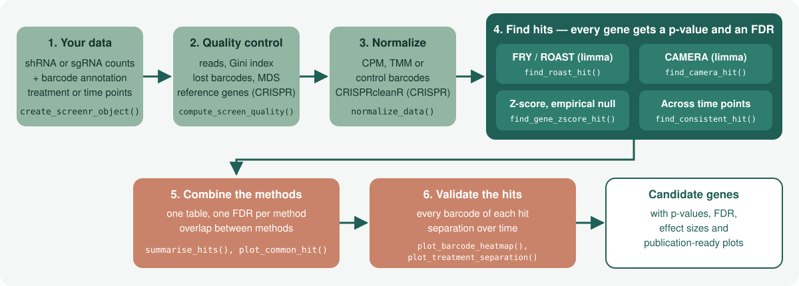
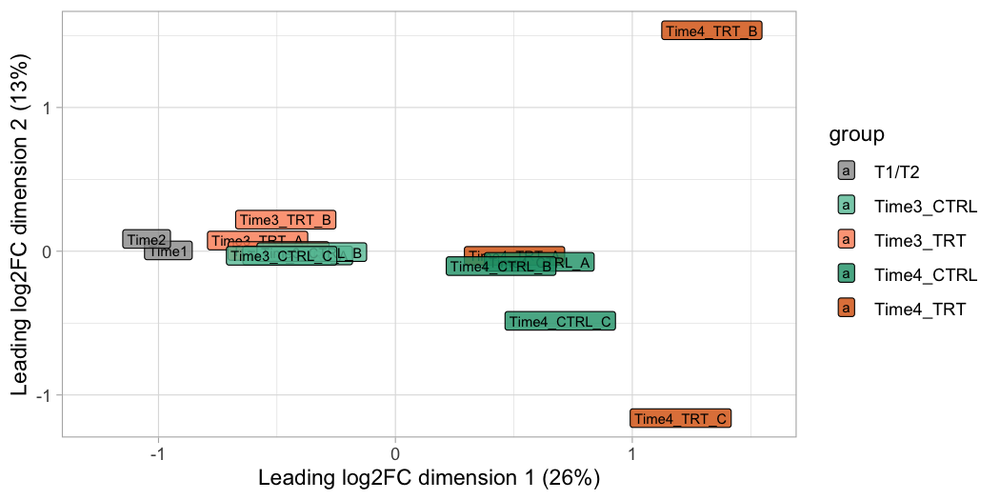
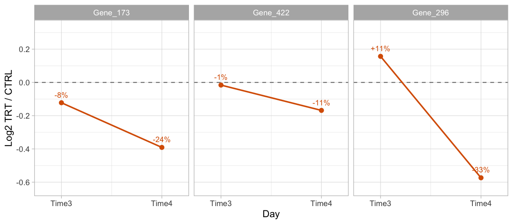
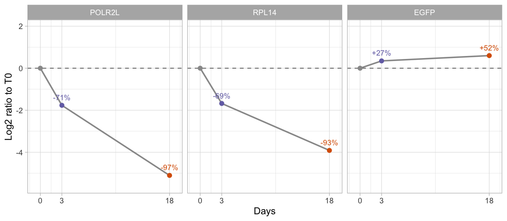
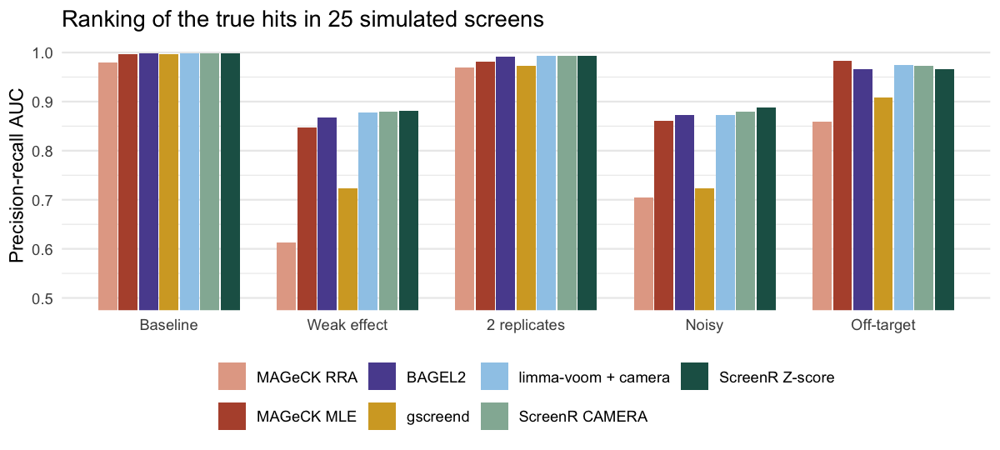

Find the genes that matter in pooled shRNA and CRISPR-Cas9 screens — with p-values you can trust, quality control built in and publication-ready plots.
ScreenR takes the barcode counts (shRNAs or sgRNAs) of a pooled screen and tells you which genes are depleted or enriched, by a treatment or over time, how confident you can be in each of them, and whether the result holds up at the level of the single barcodes. It is built on the statistics of edgeR and limma, stores the data in a Bioconductor SummarizedExperiment, and draws every plot with ggplot2.

Why ScreenR?
- Every hit comes with a p-value and a false discovery rate. The gene-level tests are calibrated: in screens without any real effect about 5% of the genes have p < 0.05, as they should.
- Benchmarked against the main tools. On simulated screens and on published shRNA (K562) and CRISPR-Cas9 (HAP1) essentiality screens, ScreenR ranks the true hits as well as the best of MAGeCK, BAGEL2, gscreend and plain edgeR/limma workflows, keeps the FDR below the nominal level and runs in seconds (benchmark).
-
Several complementary methods, one table. limma FRY, ROAST and CAMERA, a gene-level Z-score test with an empirical null (no reference genes needed), and tests across time points;
summarise_hits()combines them andplot_common_hit()shows how they agree. - Uses your replicates. Barcode statistics come from the edgeR quasi-likelihood model, so replicate variability is part of the test.
- Quality control included. Mapped reads, library evenness (Gini index), lost barcodes, replicate correlation and MDS plots, before you look at a single hit.
- Works with your files as they are. Any column names, sample descriptions from a table, helpful messages when something does not match.
-
shRNA and CRISPR. Treated vs control screens and dropout screens with only time points; checks the screen with essential and non-essential reference genes (
compute_screen_quality()), and corrects CRISPR copy-number bias through CRISPRcleanR (correct_crispr_bias()). -
Bioconductor native. The ScreenR object is a
SummarizedExperiment, so it works with the rest of the Bioconductor ecosystem.
Installation
ScreenR requires R 4.3 or later. Install the release version from Bioconductor:
if (!requireNamespace("BiocManager", quietly = TRUE)) {
install.packages("BiocManager")
}
BiocManager::install("ScreenR")or the development version from GitHub:
BiocManager::install("EmanuelSoda/ScreenR")Quick start
A treated vs control shRNA screen
The package includes an example screen: shRNA counts of treated (TRT) and control (CTRL) cells 7 and 14 days after the selection (Time3 and Time4), with three replicates, and two samples taken before the treatment. ScreenR plots have no theme of their own: choose one once with theme_set().
Describe the samples with a sample_table, give the groups used by the statistical models, and the colors of the conditions:
data(count_table)
data(annotation_table)
samples <- data.frame(
Sample = c("Time1", "Time2", paste0(rep(c("Time3", "Time4"), each = 6),
"_", rep(rep(c("TRT", "CTRL"), each = 3), 2), "_", c("A", "B", "C"))),
Day = c("Time1", "Time2", rep(c("Time3", "Time4"), each = 6)),
Treatment = c("Time1", "Time2", rep(rep(c("TRT", "CTRL"), each = 3), 2))
)
counts <- count_table[count_table$Barcode != "*", ]
colnames(counts) <- c("Barcode", samples$Sample)
groups <- factor(ifelse(samples$Day %in% c("Time1", "Time2"), "T1/T2",
paste(samples$Day, samples$Treatment, sep = "_")))
object <- create_screenr_object(
table = counts, annotation = annotation_table, groups = groups,
sample_table = samples,
palettes = list(
Treatment = c(Time1 = "#CCCCCC", Time2 = "#999999",
CTRL = "#1B9E77", TRT = "#D95F02"),
Group = c(`T1/T2` = "#999999", Time3_CTRL = "#66C2A5",
Time3_TRT = "#FC8D62", Time4_CTRL = "#1B9E77", Time4_TRT = "#D95F02")
)
)
object <- normalize_data(remove_all_zero_row(object), method = "tmm")
object
#> class: screenr_object
#> dim: 5317 14
#> metadata(3): screenr_layout palettes normalization
#> assays(1): counts
#> rownames(5317): 10208 10502 ... 13876 13995
#> rowData names(5): Barcode Gene Gene_ID Sequence Library
#> colnames(14): Time1 Time2 ... Time4_CTRL_B Time4_CTRL_C
#> colData names(5): Sample Day Treatment Group EffectiveLibSize
#> normalization: tmm (effective library sizes in colData(object)$EffectiveLibSize)Check the samples before looking for hits: replicates should cluster together.
plot_mds(object)
Compare treated and control cells at the last time point with three complementary tests, and combine them:
design <- create_design_matrix(object)
contrast <- create_contrast(design, treatment = "Time4_TRT", control = "Time4_CTRL")
# Do the barcodes of each gene change? (limma FRY, recommended first test)
fry <- find_roast_hit(object, design, contrast, method = "fry", fdr = 1)
# Do they change more than the barcodes of the other genes? (limma CAMERA)
camera <- find_camera_hit(object, design, contrast, fdr = 1)
# Is the mean barcode score extreme? (Z-score test with an empirical null)
statistics <- compute_barcode_statistics(object, design, contrast)
zscore <- find_gene_zscore_hit(statistics, reference = "empirical", fdr = 1)
# One table with the FDR of every method, best supported genes first
# (the example screen has a weak effect, so a lenient FDR of 25% is used)
hits <- summarise_hits(list(fry = fry, camera = camera, zscore = zscore),
fdr = 0.25)
head(hits)
#> # A tibble: 6 × 7
#> Gene FDR_fry FDR_camera FDR_zscore NMethods MaxFDR Hit
#> <chr> <dbl> <dbl> <dbl> <dbl> <dbl> <lgl>
#> 1 Gene_173 0.0200 0.0878 0.154 3 0.154 TRUE
#> 2 Gene_422 0.0200 0.0878 0.154 3 0.154 TRUE
#> 3 Gene_296 0.0210 0.0878 0.154 3 0.154 TRUE
#> 4 Gene_15 0.0210 0.227 0.172 3 0.227 TRUE
#> 5 Gene_370 0.130 0.227 0.273 2 0.273 FALSE
#> 6 Gene_168 0.0738 0.371 0.276 1 0.371 FALSELook at the top candidates in the data before trusting them: how far treated and control cells separate at each time point after the treatment.
treated_days <- samples$Sample[samples$Day %in% c("Time3", "Time4")]
plot_treatment_separation(object, genes = hits$Gene[1:3],
treatment = "TRT", control = "CTRL", samples = treated_days, nrow = 1)
A CRISPR-Cas9 dropout screen
A dropout screen has no treatment: the time points go in the Day column and compute_metrics(condition_column = "Day") compares them. The core essential genes of Hart et al. should be depleted, the non-essential genes not:
data(hap1_count_table)
data(hap1_annotation_table)
data(hart_reference_genes)
days <- c("T0", "T3", "T3", "T3", "T18", "T18", "T18")
crispr <- create_screenr_object(
table = hap1_count_table, annotation = hap1_annotation_table,
groups = factor(days, levels = c("T0", "T3", "T18")),
sample_table = data.frame(Sample = colnames(hap1_count_table)[-1],
Day = days, Treatment = "Untreated"),
palettes = list(Day = c(T0 = "#999999", T3 = "#7570B3", T18 = "#D95F02"))
)
crispr <- normalize_data(remove_all_zero_row(crispr))
day18 <- compute_metrics(crispr,
control = "T0", treatment = "T18", condition_column = "Day")
essential <- hart_reference_genes$Gene[
hart_reference_genes$Class == "core essential"]
nonessential <- hart_reference_genes$Gene[
hart_reference_genes$Class == "non-essential"]
compute_screen_quality(day18, essential, nonessential)
#> # A tibble: 1 × 7
#> NEssential NNonessential MeanEssential MeanNonessential NNMD CohenD AUC
#> <int> <int> <dbl> <dbl> <dbl> <dbl> <dbl>
#> 1 646 797 -2.35 0.358 -7.20 -3.87 0.998
plot_treatment_separation(crispr, genes = c("POLR2L", "RPL14", "EGFP"),
treatment = c("T3", "T18"), control = "T0", condition_column = "Day",
time = c(T0 = 0, T3 = 3, T18 = 18), nrow = 1) +
labs(x = "Days")
Tutorial 4 continues with the hits, the efficiency of the sgRNAs and the copy-number correction.
Which method should I use?
Every method looks for depleted genes by default; set direction = "Up" to find enriched genes (for example in a resistance screen).
| Question | Function | Notes |
|---|---|---|
| Do the barcodes of a gene change? | find_roast_hit(method = "fry") |
limma FRY, self-contained; the recommended first test. Needs replicates. |
| Do they change more than the barcodes of the other genes? | find_camera_hit() |
limma CAMERA, competitive; works with a single control sample. |
| Is the mean barcode score of a gene extreme? |
compute_barcode_statistics() + find_gene_zscore_hit()
|
Use reference = "empirical" when no reference genes are known, control_genes = with the non-essential genes of a CRISPR screen, and statistic = "median" against off-target effects. |
| Does the gene change at every time point? | find_consistent_hit() |
Runs the same test for several contrasts. |
| Does the effect change over time? | find_time_hit() |
Model of the whole time course, treated vs control. |
| Which genes are supported by several methods? |
summarise_hits(), find_common_hit(), plot_common_hit()
|
One table with the FDR of every method. |
How ScreenR compares

In the simulations ScreenR ranks the true hits as well as the best tools and keeps the false discovery rate below the nominal level; at a fixed FDR it is more conservative than MAGeCK MLE and BAGEL2, which find more hits but exceed the nominal FDR in some scenarios. On the published K562 shRNA screen included in the package (k562_count_table) the ScreenR Z-score test is comparable to MAGeCK RRA and BAGEL2. The benchmark article has all the details and reruns the ScreenR side of the comparison.
Learn more
| Tutorial 1: Getting your data into ScreenR | Count tables, annotations, sample descriptions and the ScreenR object |
| Tutorial 2: Quality control | Sequencing depth, library evenness, replicates, normalization |
| Tutorial 3: Finding and validating hits | All the hit-finding methods, combining them and checking the hits |
| Tutorial 4: CRISPR-Cas9 screens | Dropout screens over time, sgRNA thresholds and efficiency, quality with reference genes, copy-number correction with CRISPRcleanR, hits |
| Statistics in ScreenR | How the tests work and why |
| Choosing the reference of the gene-level test | Why we suggest find_gene_zscore_hit(reference = "empirical")
|
| Benchmark against MAGeCK and other tools | Simulations, an shRNA and a CRISPR screen with known hits, compared with MAGeCK, BAGEL2, gscreend and edgeR/limma |
| Function reference | Every function, grouped by analysis step |
Getting help
- Questions about using ScreenR: the Bioconductor support site (tag
ScreenR). - Bugs and feature requests: GitHub issues.
Code of Conduct
The ScreenR project is released with the Bioconductor Code of Conduct. By contributing to this project, you agree to abide by its terms.